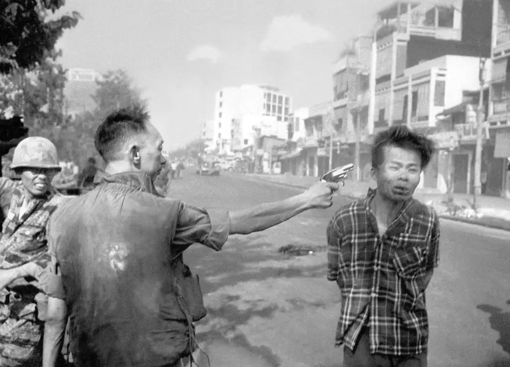

Sandwich
Jesus fucking christ it's time to make a sandwich
While you're going through this it's advisable to pray for a quick death. It won't help but, you know, maybe make you feel better at least leading up to when that process starts.
It is...NOT a short process. Hoo boy.
Ingredients
- Bread Slice 1
- Long Pork
- Mustard
Steps
- Weep
- Put down Bread Slice 1. With a gun.
- Put some mustard on the slice. Go completely hog wild. Like, really go nuts with it. I mean absolutely bonkers. Excessive. Disturbing. Get weird, motherfucker. You only live once and, uh, no spoilers but that process is pretty much up here.
- get that long pork and slap it down on the bread and mustard
- Mustard on top
- fuck it
- not even kidding, which out your dick and/or clam and just get right in there and do something disturbing to that sandwich
- by the way if I didn't mention this earlier it's open-face. Just one bread slice.
Should look exactly like this:
